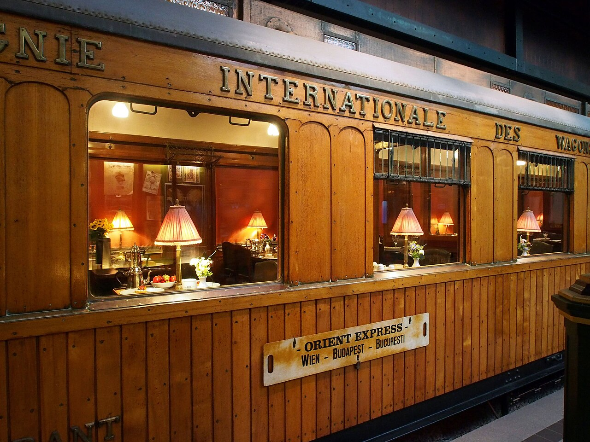

Sự thật thú vị

Mori Ougai được quân đội cử đi học ở Đức từ năm 1884 đến năm 1888. Ông đã đến Leipzig, Dresden, Munich và Berlin. Ông là người Nhật đầu tiên đặt chân lên tàu tốc hành Phương Đông.

Mori Ougai được quân đội cử đi học ở Đức từ năm 1884 đến năm 1888. Ông đã đến Leipzig, Dresden, Munich và Berlin. Ông là người Nhật đầu tiên đặt chân lên tàu tốc hành Phương Đông.